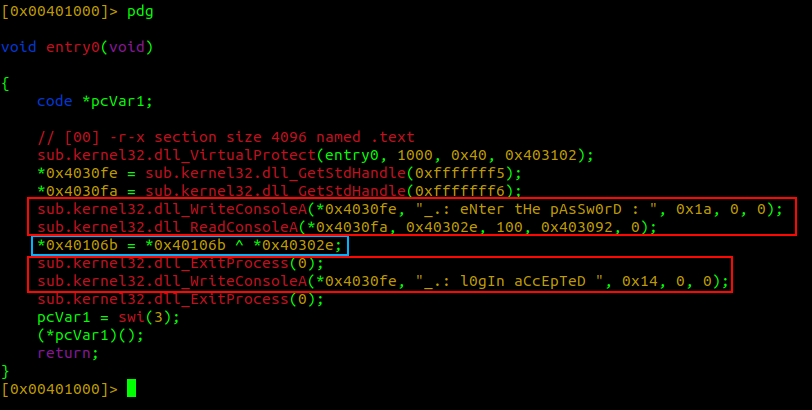
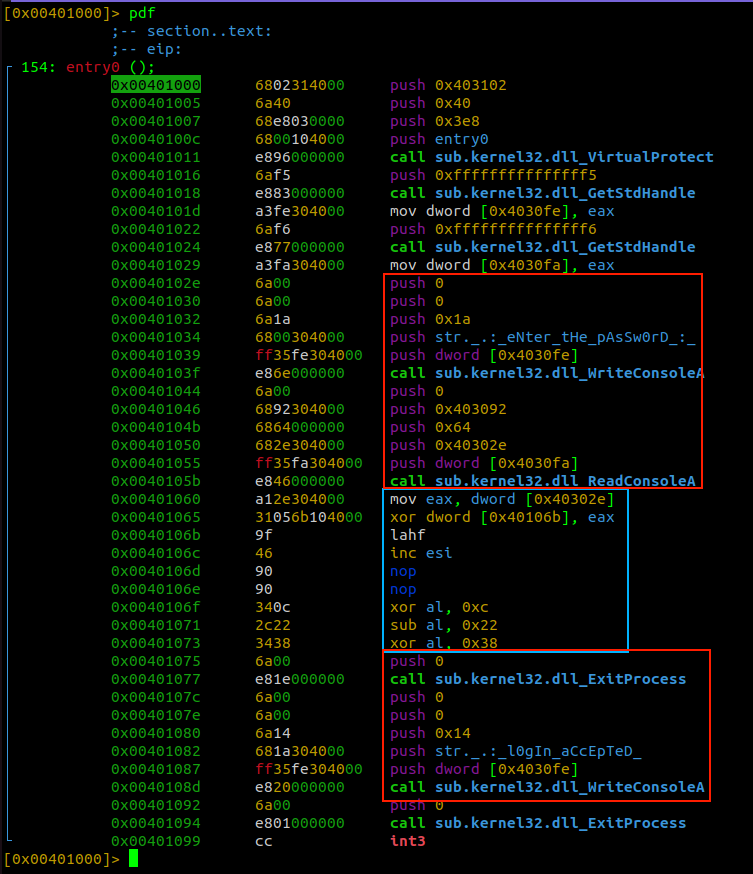
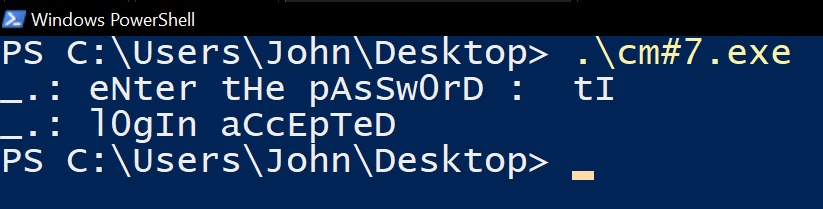

Crackme 0x01 - timotei crackme#7: código mutante e porque não devemos confiar apenas na descompilação
Sumário
Escrito por: Mateus Gualberto (Midnight Reverser) - orgulho de escrever sem IA envolvida no processo!
Licença: livre, como todo conhecimento deve ser.
Introdução#
Nesse artigo, iremos resolver o desafio crackme#7 do usuário timotei_, disponibilizado na plataforma crackmes.one. Trataremos nas seções que seguem das análises estática e dinâmica de um código que modifica sua própria estrutura dependendo de certas condições.
Triagem inicial#
O binário trata-se de um EXE (32-bit) escrito em Assembly x86, montado pelo software assembler MASM. Há apenas três seções, sendo duas de dados e uma de código, e todas têm entropia baixa, indicando que não há dados comprimidos/ofuscados. Isso significa que podemos ir direto para o código, sem necessidade de analisar e executar stubs.

Figura 1: indicação do montador e tipo de arquivo.

Figura 2: entropia das seções, obtidas com o software radare2.
Analisando o código estaticamente é possível verificar que não há funções implementadas, apenas o entrypoint e cinco funções importadas da kernel32.dll. Também há duas strings que remetem às funcionalidades de leitura de senha e realização de login.
Figura 3: listagem do entry point (entry0), funções importadas e strings.
Execução#
Quando executado, um prompt pedindo uma senha é mostrado na tela, juntamente com a mensagem _.: eNter tHe pAsSw0rD : .
Figura 4: prompt de senha.
Ao digitar qualquer senha, há dois comportamentos possíveis:
- o programa fecha normalmente, sem erros;

Figura 5: programa fechando normalmente.
- o programa irá crashar.
Figura 6: programa crashando.
Esse comportamento de crash acontece independente do tamanho da senha digitada, que difere de um buffer overflow comum. Exemplos de casos são os caracteres a, que encerra o processo graciosamente, e b, que resulta em um encerramento abrupto. Isso pode ser um indício de que o programa provavelmente está utilizando o input para realizar alguma operação em cima da seção de texto (como, por exemplo, executar dados como código).

Figura 7: inputs ‘a’ e ‘b’ e seus respectivos códigos de retorno.
Como sabemos, a baixo nível códigos e dados são apenas bytes, logo esse tipo de comportamento é possível no nível de código de máquina (e é assim que buffer overflows ocorrem!).
Entretanto, há um problema. Compiladores por padrão geram executáveis com seções de código com proteções especiais. No nosso caso, conforme a Figura 2, a seção .text está com permissões RX, que significa na prática que não é possível escrever nela.
Mas nossa hipótese de uso de dados como código não está totalmente descartado. Vamos aprofundar a análise com uma análise estática.
Análise estática de código#
Utilizaremos o radare2 para analisar estaticamente o código. Para a análise estática de código, um engenheiro reverso pode utilizar-se de duas estratégias principais: o disassembly das instruções em mnemônicos e argumentos, ou a descompilação, que tenta traduzir as instruções de volta para uma linguagem de alto nível (geralmente C).
O radare2 conta com dois plugins extremamente úteis para o processo de descompilação. São eles: r2dec e a integração do descompilador do Ghidra. Vamos analisar o resultado dos dois descompiladores abaixo
r2dec#
Analisando o entrypoint, é possível perceber três blocos principais:
- o primeiro, em vermelho, que escreve a string
_.: eNter tHe pAsSw0rD :na tela e lê 0x64=100 bytes para o endereço0x40302e- documentação da função ReadConsoleA informa esses campos; - um segundo bloco, em ciano, que faz operações matemáticas utilizando o registrador EAX, que recebe um ponteiro para os 4 bytes de
0x40302e- a senha digitada, além de outras operações aritméticas sem sentido; - um terceiro bloco, em vermelho, que demonstra que as instruções que desejamos executar para concluir o desafio estão após uma chamada do ExitProcess.

Figura 8: descompilação com r2dec.
Precisamos de uma forma de “pular” essa chamada a fim de evitar o término do processo. Apenas com as informações dessa descompilação, não é claro qual a forma de burlar essa execução.
r2ghidra#
A saída do descompilador do Ghidra é mais limpo, com os mesmos blocos destacados na Figura 9, mas ainda assim não deixa claro qual o meio de pular a chamada do ExitProcess.
Figura 9: descompilação com r2ghidra
Após verificar dois descompiladores, talvez o disassembly nos auxilie.
Disassembly#
Os mesmos blocos explicados na seção do r2dec estão na Figura 10. A vantagem de analisar com um disassembler poderoso como o disponível no framework radare2 é que é possível trabalhar com endereços (primeira coluna), opcodes - ou bytes das instruções (segunda coluna) e com os mnemônicos e argumentos das instruções (terceira coluna).
Figura 10: disassembly do entrypoint do binário.
Analisando atentamente as duas instruções após a chamada de ReadConsoleA, é possível identificar a passagem de 4 bytes do endereço 0x40302e (senha digitada) para o registrador EAX e após isso há uma operação XOR de 4 bytes de EAX com o valor apontado por 0x40106b, que aponta para a instrução após o XOR.

Figura 11: operação XOR de EAX com bytes apontados por um endereço da .text
Além disso, tanto nas saídas dos descompiladores quanto no disassembly, a primeira função chamada é a VirtualProtect. Essa chamada com os argumentos repassados via calling convention torna 0x3e8=1000 bytes a partir do entrypoint executáveis, a partir da configuração do valor 0x40 (PAGE_EXECUTE_READWRITE) na execução do VirtualProtect. Com isso, é possível alterar 1000 bytes da seção .text, que por padrão não permite. Matamos a charada!
Tendo isso em mente, o que precisamos para resolver o desafio é um valor digitado que XOR com os 4 bytes a partir de 0x40106b resulte em um pulo para o endereço da primeira instrução após o ExitProcess, que é 0x0040107c.

Figura 12: pulo para a resolução do desafio.
Resolução#
A primeira coisa que vem à mente é utilizar um jump short, relativo para alterar as instruções e efetuar o pulo para 0x0040107c. Um JMP desse tipo utiliza apenas 2 bytes, um deles sendo o opcode EB e o outro sendo a quantidade de bytes entre a instrução do jump e o endereço para o qual se deseja mudar o fluxo de execução.
Logo, esses dois primeiros bytes que sofrerão a operação XOR para se transformar no JMP não deverão entrar na conta da diferença relativa. Contando a quantidade de bytes que há após esses dois bytes até a chamada de ExitProcess (incluído), temos 15 bytes.

Figura 13: bytes a serem modificados em ciano, bytes até a chamada da resolução do desafio em vermelho.
Uma outra forma de contabilizar a quantidade de bytes seria subtrair os endereços:
0x0040107c - 0x0040106d = 15
Agora sabemos que os 2 bytes a sofrerem o XOR devem se transformar nos bytes EB 0F. Trivialmente, aplicando uma operação de XOR em cada byte, obtemos a string tI, que é senha do desafio, conforme Figura 14 e Figura 15.
Figura 14: senha do desafio.
Figura 15: prova da corretude da senha.
Na análise dinâmica, podemos verificar claramente o que acontece durante a execução:
- após digitar
tIcomo senha, mas não aplicar o XOR, ainda se mantém o código original:

Figura 16: execução passando tI como senha, antes da operação XOR.
- após o XOR, o código se altera e o fluxo de código também se altera.

Figura 17: execução passando tI como senha, após a operação XOR.
Conclusão#
Nesse desafio foi possível perceber a capacidade de softwares para escreverem e executarem dados em regiões que a princípio seriam isentas de tais anomalias. Além disso, aprendemos um pouco mais sobre instruções e que apenas a descompilação pode não mostrar o resultado esperado, logo um engenheiro reverso tem que conhecer também assembly e ler tais códigos.